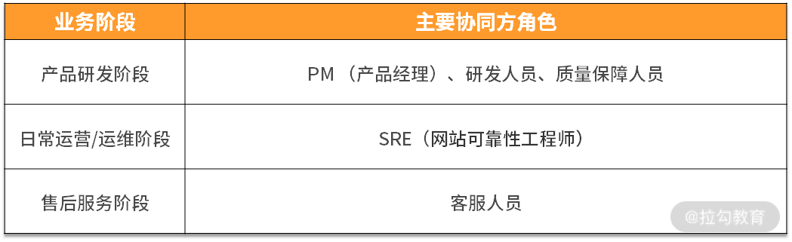
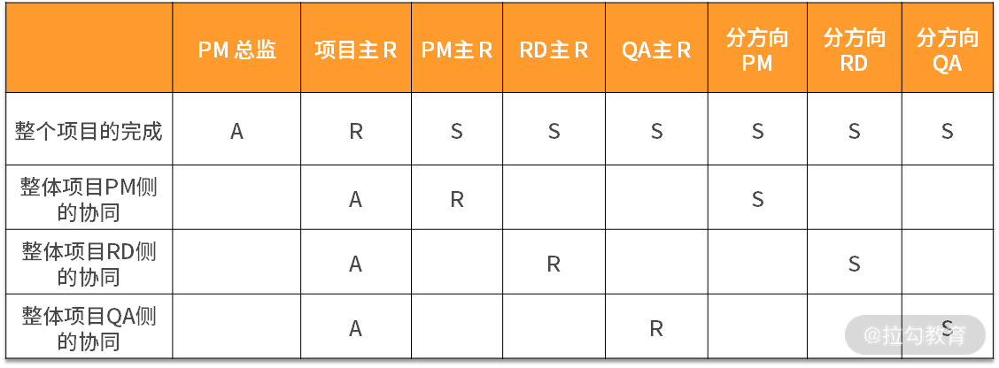
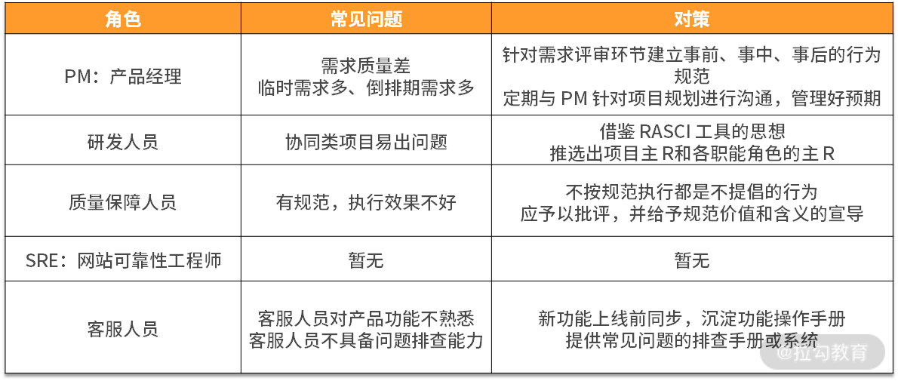

- 00 开篇词 既往不恋，当下不杂，未来不迎.md.html
- 01 微服务架构有哪些特点？.md.html
- 02 微服务架构下的质量挑战.md.html
- 03 微服务架构下的测试策略.md.html
- 04 单元测试：怎样提升最小可测试单元的质量？.md.html
- 05 集成测试：如何进行微服务的集成测试？.md.html
- 06 组件测试：如何保证单服务的质量？.md.html
- 07 契约测试：如何进行消费者驱动的契约测试？.md.html
- 08 端到端测试：站在用户视角验证整个系统.md.html
- 09 微服务架构下的质量保障体系全景概览.md.html
- 10 流程规范篇：高速迭代的研发过程需要怎样的规范？.md.html
- 11 测试技术篇：测试技术这么多，我该如何选型？.md.html
- 12 测试技术篇：如何提升测试效率？.md.html
- 13 测试技术篇：专项测试技术解决了哪些专项问题？.md.html
- 14 CICD 篇：如何更好地利用多个“测试”环境？.md.html
- 15 CICD 篇：如何构建持续交付工具链？.md.html
- 16 度量与运营篇：如何做好质量和效率的度量与运营？.md.html
- 17 度量与运营篇：如何度量与运营效率和价值？.md.html
- 18 组织保障篇：质量是设计出来的.md.html
- 19 软件测试新趋势探讨.md.html
- 20 结束语 QA 如何打造自身的核心竞争力？.md.html
18 组织保障篇：质量是设计出来的
质量保障是每个测试团队的天职，但是单靠测试人员无法保障好产品质量，产品质量保障离不开组织中每个参与部门的努力，因此在组织中建设起“质量文化”至关重要。本课时，我主要讲解质量保障体系中的组织保障。
协同方角色
我在第 10 课时“流程规范篇：高速迭代的研发过程需要怎样的规范？”中有提到，产品研发是为业务服务的。业务流程分为 3 个阶段：产品研发阶段、日常运营/运维阶段、售后服务阶段。这三个阶段涉及许多部门角色的协作，包含但不限于产品经理、研发人员、质量保障人员、客服人员、SRE、业务运营人员、法务人员、商务人员、财务人员等。
下面将对在业务流程中与质量保障人员打交道最多的角色及职责进行讲解。

（1）PM： 产品经理
通常来说，需求分为业务需求和技术需求，业务需求由产品经理负责，技术需求由研发人员负责，技术需求占比较少，一般不超过 30%，所以产品经理是主要的需求负责方。
角色职责
产品经理（Product Manager， PM）是产品研发阶段需求的主要负责方，主要工作职责如下。
- 需求撰写：负责某个业务方向或项目的功能、结构设计与 PRD（需求文档） 的撰写。
- 项目管理：与研发团队、业务运营团队沟通协调，完成产品的规划，保障产品实施阶段的进度与质量。
- 分析与改进：对线上产品进行监控和分析，并持续改进产品；对竞品进行持续的追踪、分析，对产品进行完善。
归结为一句话来说就是，PM 主要负责对需求进行分析、编写需求文档、组织需求文档的评审、协调项目资源、对交付结果进行验收等工作。
常见问题与对策
在协作过程中，PM 的常见问题主要有需求质量差、临时需求多、倒排期需求多，针对这些问题，对策如下。
常见问题：需求文档质量差
需求文档是产品经理日常最重要的输出，在产品交付过程中使用频率极高。需求文档是需求实现前用文档讲述需求的实现思路，实现过程中按需求文档进行技术设计、研发、测试设计、测试执行，需求上线后回顾需求文档进行复盘总结。因此，提升需求文档的质量，有助于保障需求整体质量，提升研发过程效率，降低质量成本。可以通过事前、事中、事后三个阶段来应对。
- 需求评审前：需求文档需要在需求评审的前两天时间发出来，以方便相关方提前阅读并提出问题；针对需求文档中不合理的地方提出问题，务必以书面的形式与该需求关联起来，比如说录入缺陷系统、形成需求文档的评论、批注等；需求评审前，PM 需要与主要开发人员进行预沟通，确保需求文档中方案的可行性。
- 需求评审中：需求评审过程中不针对细节进行讲解和探讨，评审时间应控制在1小时以内；需求评审时相关参与方应尽可能都在场，避免因为信息不对称造成其他问题。需求评审过程中发现的问题，同样需要以书面形式记录下来。
- 需求评审后：针对参与方提出的需求问题进行修改，产品经理修改完毕后，形成需求文档终稿；在此之后，需求文档的修改视为需求变更，需要发送邮件申请变更。
针对上述对策，可以逐渐形成规范，未按规范执行的部分，需要定期 Review，以便及时纠正不规范行为。
常见问题：临时需求多，倒排期项目多
这类问题属于需求规划类问题。比较建议的做法是定期与 PM 针对项目规划进行沟通，了解他的阶段性规划（季度和月度），重点项目的预期上线时间点，提前管理好预期，在合理的范围内引导 PM 把需求均匀分布，避免出现一段时间忙、一段时间闲的情况。
（2）研发人员
角色职责
研发人员，就是我们通常所说的程序员或研发工程师，在一些公司也叫 RD（即 Research & Development engineer），主要负责某系统或平台的开发和维护，使其性能、稳定性满足业务要求。具体到需求层面，研发人员负责编写技术设计方案、编码（包括与协同方联调和自测），最终把交付物提交给测试人员进行测试。测试完成后再把交付物发布到线上环境。
常见问题：协同项目易出问题
研发涉及多个方向的需求或项目，比较容易出现各种各样的问题。比如多方需求理解不一致、项目排期未对齐、技术方案实现有误、因依赖服务问题导致测试阻塞，等等。上述这些问题的主要原因是，各方向的产品研发测试等人员都只明确负责所在方向的交付内容，对于需求关联处和需要协同的部分，看似都负责，实际上多人同时负责等同于没有人负责。
这种情况比较推荐的做法是借鉴 RASCI 工具的思想。比如，有且仅有一个人为整个项目的完成负责，在各子方向需求的产品经理、研发人员、测试人员中也推选一个主 R，职责是在该职责角色内起到横向主导作用。在整个项目过程中，分职能主 R 向项目主 R 虚线汇报，如下为相应的 RASCI 矩阵：

RASCI 是一套用来确定责任的表格，RASCI 是指负责、批准、支持、咨询和知情。
R：负责（Responsible）对项目或者任务的完成负责的人。 A：批准（Accountable）项目关键决策的批准人。 S：支持（Supportive）为项目完成提供资源的人。 C：咨询（Consulted）为项目提供数据或者信息的人。 I：知情（Informed）需要了解项目相关情况的人。
该工具可以帮助减少责任重叠，产生清晰角色的工具，以矩阵形式出现。
（3）质量保障人员
质量保障人员（Qualtiy Assurance， QA）很多时候通俗表达为测试人员，它是一种统称，在角色设置上不同的公司或项目有所区别。 比如有些公司的功能测试人员和测试开发人员是两个不同的职位，有的公司则只有 QA 一种角色，还有的公司把 QA 和 QC 分开，他们对职位的命名方式也有所不同。我听过最极端的情况是一个对日外包的项目，执行用例、提交 Bug、维护用例、编写用例、设计测试计划的测试人员分别是独立的群体，互不干涉。这些人共同保障所在项目的质量。
一般来说，QA 的工作涉及产品研发整个流程，且涉及每一位参与研发的人员（包括但不限于产品经理、各种开发人员、测试人员、UE/UI、运营人员、客服人员、SRE 等），但专职的质量保障工作本身不太涉及具体的软件研发细节，比较偏向于保障整个流程的质量。而 QC 则侧重于具体的测试活动，利用各种方法去检查某个功能是否满足业务需求。在之前的文章中也提到过“测试”和“质量保障”，QC 偏向于测试部分，QC+QA 则偏向于质量保障。
在我看来，QA 应该是上述 QC 和 QA 角色职责的结合体，既要保证开发流程的质量，又要保证具体产品的质量。 许多一二线的互联网大厂，无论叫作 QA， 还是叫做测试工程师，他们的工作职责都是质量保障，而非单单是测试本身。
常见问题：有规范，执行效果不好
在产品交付过程中，有各种各样的规范，但总有 QA 在执行的时候打折扣。比如，明确规定了“冒烟用例只要有 1 条执行不通过，则认定为提测失败，需要提测打回重新提测”，但依然有 QA遇到此类情况时，默默地按照提测通过处理。再比如，规定了“PM 需要在产品功能上线前完成功能验收，否则可以拒绝该需求上线”，但依然有 QA 抱着侥幸心理，默许需求上线。
偶尔一两次不严格执行规范，不一定会导致线上问题或故障，但这样的行为隐患太大了。因为它会让协同团队人员对流程规范缺少敬畏感，不利于其他规范的落地。而且虽然表面上你的“网开一面”让协同方更“便捷”了，但他们心里会认为这个 QA 不靠谱。
针对这类情况，需要分析未按规范执行的根本原因。通常来说，不遵守规范的情况分两种：
- 一种是因为需要推动别人做事儿所以心理负担比较大；
- 另一种则是为了避免麻烦，因为当出现不符合预期的情况时，按规范执行通常需要执行额外的动作，比如重新提测和验收、频繁周知、规范宣导，等等。
无论属于哪种情况，不按规范执行都是不提倡的行为，应予以批评，如果情节严重需要在团队内部进行通报。但不同的情况应对措施不同。
- 针对情况一，需要给相关 QA 进行规范的宣导和心理建设（项目规范是对事儿不对人的，正适合纠正不规范行为。规范是保障质量的必要手段，严格执行规范是在降低线上风险，本质上是在帮助协同方，不应该也没必要存在心理压力和负担）。
- 针对情况二，需要宣导规范在效率提升方面的意义（单独一个 Case，规范也许会降低效率，但长远看，规范确保事情正确地发生，既保质又提效，且规范可以传承，反复使用）。另一方面可以看下非预期情况下 QA 额外付出的成本是否有优化的空间。
常见问题：做测试而不是做质量保障
测试经常被当作是质量保障的同义词，事实上，它们是两种不同的工程活动。
- 测试是一种被动方法，它通过多种检测和调查技术来找到潜藏着产品中的缺陷，作为开发工作完成后的验证或检验工作，这种情况很低效。
- 质量保障是一种主动方法，它通过“测试左移”，将测试活动构建于整个业务流程过程中，预防为主，防治结合，通过体系化手段提升过程质量和交付质量。
戴明管理十四条原则 第 3 条
停止依靠大规模检查去获得质量（Cease dependence on mass inspection）。靠检查去提高质量，太晚了，无效而且昂贵。质量不是来自检查，而是来自植入源头，改进系统过程。检查、扔弃、降级、返工不是改进系统过程的正确方法，当质量不到位时，检查总比不检查好，而检查也只可能是唯一可用的方法，但损失已造成，有的无法弥补，有的可以返工但仍会增加开支。 1．检查是一个非常有限的工具 2．奖励检查人员多发现缺陷十分有害 3．检查要统一标准，责任要明确到个人
一个测试团队从只做测试转型到做质量保障，跨度还是比较大的，是个系统工程。篇幅所限，这里不展开讨论。
（4）SRE ：网站可靠性工程师
SRE 全称是Site Reliability Engineer，即网站可靠性工程师。在不同公司， SRE 职能范围差别很多，大体有如下几种类型的职责：
- 自动化运维平台的设计、开发、维护和优化；
- 负责应用系统的日常维护，确保其稳定、可靠、高效运行；
- 持续进行线上各种数据的运营，找到系统薄弱点，落地改进项目；
- 积累运维最佳实践，输出运维技术文档或分享。
运维人员与测试人员的对接没有利益冲突点，且同属于横向支持型角色，相对来说比较融洽。但这里给出一个建议，测试人员和运维人员可以相互补充，充分发挥自身的优势。
- 运维团队一般是公司级的技术部门，基础技术和架构方面的视野较广，且在服务可用性指标、线上历史故障、服务资源利用率、监控体系方面有比较丰富的经验。
- 测试团队一般是业务级的技术部门，对当前业务的认识和理解较为深刻，在需求、研发等交付前的过程中发挥着非常重要的作用。
因此，测试人员可以与运维人员密切配合，做好各类数据的运营和最佳实践的输出和宣导，共同为服务稳定性保障做贡献。
（5）客服人员
客服人员的主要工作如下：
- 通过各类媒体渠道（客服热线、邮件、产品反馈入口等）受理用户的咨询、投诉反馈或建议；
- 善于倾听并快速理解客户的问题，有效化解客户投诉情绪，提供暖心的服务，提高客户的满意度；
- 负责客户心声的收集与传递，进行数据分析，根据客户痛点推动优化服务流程、产品功能或 Bug 解决。
- 需要对产品有足够了解，善于沟通，熟悉产品各种功能。
常见问题：容易充当传话筒
客服人员比较容易出现的问题是他们基本只充当了传话筒的角色，依然有很多问题流转给了产研侧，经过产研侧排查后发现不外乎客服人员对产品功能不熟悉、不具备问题排查能力等，可以通过如下方法来解决。
- 产品功能熟悉：有新功能上线时，应提前同步给客服人员进行学习和熟悉、并针对可能产生客诉的地方进行预演和话术应对；由于客服人员的流动性比较强，所以应将产品功能操作手册及相关话术沉淀下来，用于定期的培训。
- 问题排查：提供给客服人员对基本功能或问题的排查步骤，或者提供一些系统和工具供其自助使用。这方面做得比较好的当属移动、电信这样的移动通信运营商，有问必答，基本都能当场搞定。
质量文化建设
什么是质量文化？
文化是组织成员表现出来的共同的信念、价值观、态度、制度和行为模式。那么质量文化就是组成成员在质量方面表现出来的共同的价值观、态度和信念，并且每天都以这些为驱动力来对待日常工作。可见，文化不是纸面上写了什么，喊了什么口号，而是大家信仰什么，比如日常如何思考、如何做事儿。
为什么需要建立质量文化？
可能你会问，已经有质量保障体系了，为什么还要推行质量文化建设？因为，在大多数质量保障体系推行过程中更多关注的是可见的质量标准、要求、操作程序等，这些内容给人的感觉是“组织要求我做好质量”，而忽略了不可见的质量意识、质量行为等精神层面的东西，这些内容给人的感觉是“我要为组织做好质量”，是主动的、自发的。
当然，质量文化建设是建立在质量保障体系之上的，没有完善的质量保障体系作基础，没有相应的质量标准和流程的约束，是无法推行好质量文化的。
如何推行质量文化建设？
推行质量文化建设主要有以下几个方面。
- 领导重视：这是非常关键的一点，但也通常被忽略。因为大家会默认高层管理者肯定对质量重视啊，但要注意的是，这里的领导重视是领导层要意识到进行文化变革的必要性，意识到领导层的一言一行会影响员工对质量的态度，进而影响员工日常行为的质量。因此，在这一点上，务必跟业务负责人和各中级管理层达成共识，领导层要起到模范和支持的作用，只有“上行”才能“下效”。
- 激励制度：质量文化的开展需要所在业务全体成员的共同参与，特别是一线成员。激励制度是要有机制去识别对产品或服务质量有益的行为。如质量改进方面的建议、单元测试覆盖度和稳定性达到一定标准、质量相关改进进步最大等，颁发一定的奖金和质量证书，精神奖励和物质奖励结合。
- 文化触达：一方面需要在某些会议场合宣导质量相关建设，另一方面针对在质量方面的 GoodCase 和 BadCase 进行信息触达，比如业务内部博客、阶段性的质量报告等。
结语
本课时我讲解了业务流程过程中主要协同方的角色、职责、常见问题与对策，总结如下：

其次还讲解了质量文化建设相关内容，文化不是纸面上写了什么，喊了什么口号，而是大家信仰什么，比如日常如何思考、如何做事儿。质量文化的价值在于组织成员能够主动、自发地思考质量保障，做好手头的事情。另外，通过领导层重视质量、建立激励制度、质量文化触达等多种方式推行质量文化建设。
下一课时，我将针对软件测试新趋势进行探讨。
相关链接 《架构即未来》 现代企业可扩展的Web架构、流程和组织 打造质量文化：https://www.infoq.cn/article/create-culture-quality